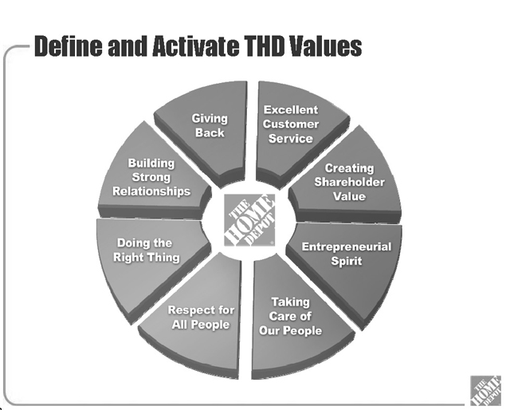
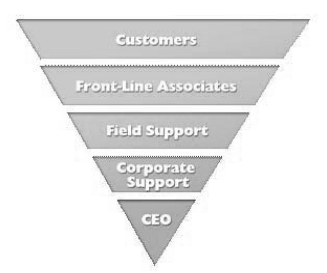

Beginning in the late 1990s and early 2000s, the role of ethics in business took on new meaning. Part of this was driven by business excesses that provoked the U.S. Congress to introduce and pass the Sarbanes-Oxley Act, an act in part driven by business’ failure to conduct its business ethically. Public relations professionals have argued for years that ethical business practice is the key to establishing and maintaining relationships with key publics—whether they be stockholders or stakeholders. Ethical considerations in the practice of public relations have been on the forefront of public relations education for years, but because public relations practitioners had seats at the management table, they were not always taken seriously. This chapter introduces and examines ethics and its role in organizational leadership, the public relations professional’s role in decision making, and what constitutes moral analysis.
Questions of how to guide behavior and differentiate between right and wrong have intrigued mankind for thousands of years. From the ancient philosophy of Plato and Aristotle to the Enlightenment of Hume, Kant, Mill, and the theoretical approach of Jesus, Buddha, Confucius, Mohammad, and Aquinas, to modern-day philosophy, we explore the questions of right versus wrong, good versus evil, light versus darkness. Singer averred, “Ethics is about how we ought to live.”Singer (1994), p. 3. Given Singer’s simple definition of ethics, public relations ethics is about how we ought to communicate. Much goes on behind that communication for the public relations professional. Issues managers must identify potential problems, research must be conducted, and both problems and potential solutions must be defined in an ethical manner. Therefore, ethicsIn public relations, moral principles defined as how decisions, management items, and communication ought to be conducted. can be defined for public relations as how we ought to decide, manage, and communicate.
Communication is not the ultimate goal of public relations. Our goal is building relationships through the use of ethical communication, listening, and strategic alliances, while collaboratively incorporating the ideas of others into organizational policy. We try to build both the means and fluency to create dialogue with our publics. If the purpose of public relations is to build relationships with publics, trust is an essential part of any ongoing relationship. Whether those publics are inside the organization, such as employees, management, administrative workers, or outside the organization, such as suppliers, distributors, retailers, consumers, communities, and governments, ethics is the linchpin that holds together relationships.
To understand the importance of ethics in relationships, imagine the following scenario. If you purchased a product from a company that advertises that it is the highest quality, you might feel exploited were you to find out that the organization sold the product knowing it was manufactured with defective components. Chances are, you would not want to have a long-term relationship with that organization, meaning that you would not become a repeat purchaser of their product. Through this simple example it becomes apparent that the ethics of an organization have a nebulous yet certain impact upon relationships with publics.
Ethics intersects with all levels of an organization. From the assembly line to middle management, ethics must play a role in decision making in order for an organization to be the most successful that it can possibly be. To be certain, much of the responsibility for ethics rests at the top of the organization, because without a vision and leadership from the top instilling the importance of ethics and the values of the organization, ethical behavior tends not to flourish. In other words, public relations should act as the ethical conscience of the organization by including the views of publics in decision making, but everyone in the organization must value ethics, most importantly the leaders of an organization.
This multipronged ethics function is what ethicists call “institutionalizing corporate conscience.”Goodpaster (2007). The ethics function must be a part not only of public relations but also of the corporate culture. This section will show you how to identify values, instill ethical values throughout the organization’s culture, and consider and resolve ethical dilemmas.
Many entry and midlevel public relations professionals often wonder how they got into the territory of philosophy and ethical decision making. Allow us to explain the answer in terms of systems theory and you will soon understand why a working knowledge of moral philosophy is an absolute must for the public relations manager.
As a specialized field, public relations is in danger of being myopic or atomized. Laszlo explained that such specialized knowledge can form a barrier to entry and result in isolation, meaning that reality is viewed in fragments rather than holistically.Laszlo (1996). The contrasting view is systems theoryThe viewpoint that an organization is a system comprised of smaller subsystems. Public relations functions to communicate both among the organization's subsystems and with the organization's consumers and other publics., similar to biological systems or ecological systems, such as the body being comprised of a circulatory system, a nervous system, a digestive system, and so on. This organic view of systems was applied to society by the philosopher Luhmann to explain society as comprised of interdependent but somewhat autonomous social systems comprising the larger whole.Luhmann (1984). In organizational terms, an organization is a system comprised of smaller subsystems. Public relations is the function that communicates both among the subsystems of an organization and with its external environment, comprised of consumers and other publics. In systems theory terms, the environment is anything outside of the conceptual “boundary” of the organization. Those inside the boundary of the organization normally have a financial relationship with it; those in the environment can come and go across the boundary of the organization as consultants, for example, or they can exist wholly within the environment. Information freely crosses this boundary both as inputs to the organization when research is conducted, and output from the organization when it communicates with external publics.
In systems theory terms, public relations is a part of the management subsystem (see Note 11.3 "The Organizational Subsystems Within Systems Theory"). Similar to a nervous system, management is the brain of the organization and communication is used to coordinate its activities. The other subfunctions in a typical organization are occupied with their own areas of expertise, yet public relations must interact with them both in collecting data, identifying potential issues or problems, socializing new employees, and building organizational culture. These activities require an enormous amount of communication, listening, collaborative problem solving, and management skill. Public relations managers enact this internal communication function both across organizational subsystems, from management in a top-down fashion, and back to management when reporting on the internal state of affairs. Essentially, public relations acts as a communication conduit that facilitates the smooth internal operations of an organization.
An open system is interdependent with its environment; the environment supplies many necessities of production, including labor, and the information necessary to adjust to market trends and manage the organization effectively. Closed systems are rare, as most organizations have varying degrees of interdependence with their environments, and thus, varying degrees of openness.
Public relations practitioners also span the boundary of an organization in maintaining relationships with publics in the external environment. When they cross this boundary in order to collect data, either formally or informally, they are known as “boundary spanners.” Public relations managers scan the environment looking for messages of concern, and changing trends, thereby identifying problems with their publics within their industry. This process of monitoring the environment for potential issues of concern is called environmental scanningThe process of monitoring the environment for potential issues of concern and changing trends in order to identify problems with an organization's publics..Stoffels (1994).
By acting as boundary spanners, maintaining relationships with publics outside the organization, and collecting information from outside the organization through environmental scanning, the public relations function is perfectly situated to advise on ethical matters. Understanding the values of publics with whom the organization has relationships is enormously valuable because their ethical values can be represented in management decision making by the public relations manager. She or he is already familiar with the strategic publics in the environment of the organization, their desires, priorities, and issues with the organization. The relationships the public relations managers seek to build and maintain are a source of valuable input and information during ethical decision making because those publics can be consulted on issues important to them. The public relations manager is tasked with representing those views in top management decision-making sessions. No other organizational function is better suited to understand the needs and values of external publics than is the communication function. The legal department, no doubt, is well versed in understanding government and regulatory publics, but will have little knowledge of the values of publics extending beyond the legislative arena. Likewise, the marketing function will be knowledgeable about the values of consumers, but will have little knowledge of the values of the communities surrounding manufacturing sites. Only public relations fills this knowledge gap in terms of systems theory. By understanding and incorporating the values of publics, more ethically inclusive, diverse, pluralistic decisions can be made. These decisions result in a greater harmony between the organization and publics over time, fewer lawsuits, fewer disgruntled publics, fewer boycotts, and can prevent an expensive loss of reputation.
One caveat to using a systems perspective to justify why public relations should act as an ethical counsel to senior management is that few public relations practitioners have actually studied ethics in a rigorous manner. Those who have studied ethics are likely to be more senior-level professionals, reporting to the top of their organization (normally the chief executive officer [CEO]), earning an above average salary, and the majority are male. This finding does not mean that younger, entry or mid-level and female professionals have less ethical reasoning ability, only that they have fewer chances in which to advise their organizations on ethical choices. Ethics study and training are encouraged as a way to remedy this problem; we will delve into moral deliberation shortly.
A caveat of using public relations as an ethics counsel is that the public relations manager must have a seat at the senior management table in order to advise on these matters. The worldwide International Association of Business Communicators (IABC) study discussed later found that 30% of public relations professionals report directly to the CEO, 35% report one level below the CEO or have a dotted line (indirect) reporting relationship to the CEO. That finding is good news because it means that about 65% of public relations professionals worldwide have access to their CEOs and say they advise at least occasionally on ethical matters. However, the remaining 35% of public relations professionals reported no access to their senior management, meaning that they are not at the table when important ethical decisions are made, nor can they advise or give input on these decisions. Professionals oftentimes have little influence on policy, and the ethical decisions they must face are smaller in magnitude, often dealing with only technical aspects of the public relations function. For those, ethics study is often needed in order to advance their ascent into management.
Should public relations advise on ethics? The public relations practitioners in a worldwide study reported the highest levels of agreement to these statements: “Ethical considerations are a vital part of executive decision-making” (mean 4.61 of 5.0 maximum) and “public relations practitioners should advise management on ethical matters” (mean 4.12 of 5.0 maximum).Bowen, Heath, Lee, Painter, Agraz, McKie, et al. (2006).
Clearly, there is agreement in the industry that management must consider ethics and that the role of ethical counsel falls on the shoulders of the public relations manager. Managers of communication need to consider two ethical roles and learn the basis of ethics to foster their ability to enact each. These two distinct ethical roles were first identified by the IABC Business of Truth study and also have been found in subsequent research.See Bowen, Heath, Lee, Painter, Agraz, McKie, et al. (2006); Bowen (2008), pp. 271–296. The first role is managing the values inside the organization, including conducting ethics training. The second role is helping to analyze and deliberate ethical decisions alongside top management incorporating the knowledge of publics gained through boundary spanning. We will study each role thoroughly to prepare you for the many ethical challenges to be managed as a professional communicator.
All organizations have a certain personality that scholars call organizational culture, and that culture also has values or values certain concepts above others.Goodpaster (2007); Sims and Brinkman (2003), pp. 243–256. Even a lack of concrete values is a value of sorts. Will organizations, particularly profit-seeking businesses, take a citizenship role in society? Or will they use society to achieve their own ends? These types of questions can help you discern the values of organizations. Looking specifically at an organization, you can assess the values it holds by reading mission statements,Bowen and Broom (2005). policy documents,Seeger (1997). codes of conduct, and ethics statements;Murphy (1998). examining the statements of leadersKidder (2005). and its statements toward publicsCurtin and Boynton (2001). and communities;Leeper (1996), pp. 163–179. and the use of the organization’s Web site as a dialogue building tool or simply as an advertisement.Bowen (2009b, August 7).
The reason we referred to a chicken and egg dilemma is because it is very difficult to determine whether ethical individuals drive ethical behavior or organizational culture drives ethical behavior, and which one comes first. Is it possible to turn an organization that holds little regard for ethics into an ethically exemplary one? Can ethics thrive in an organization in which the CEO cares little for such pursuits? What if the CEO exemplifies ethical leadership but takes over a historically unethical organization? Public relations is inextricably involved in questions such as these because it is responsible for communicating with internal publics, for helping to create and drive an enduring mission of the organization, and for helping foster an organizational culture that is responsible and includes the views of publics outside the organization.
The answer to the chicken and egg dilemma certainly varies according to organization and industry. However, ethicists generally hold that an organizational culture valuing ethics is more important than individuals.Sims (1994). Even the most ethically conscientious employee could not have prevented the bankruptcy of Enron.Sims and Brinkman (2003), pp. 243–256. One study exploring the chicken and egg dilemma concluded that an ethical organizational culture must be in place to foster and reward ethical decision making, lest an ethical individual making commendable decisions will not be encouraged or rewarded for doing so and thus cannot change the organizational culture toward the ethical.Bowen (2000). In fact, organizations supportive of ethical decision making incorporate ethical debate and deliberation as a highly valued activity in their organizational culture.Bowen (2004b), pp. 311–324.
In order to act on this knowledge, the public relations function is responsible for helping to learn the values of the organization through conducting internal research and to refine and encourage the laudable values. Building an organizational culture focused on ethics takes much time and effort and a consistent commitment to communicate about not only the importance of organizational values but also the crucial role and decision making of ethical analyses. Contrary to what some managers believe, ethical decisions are not “easy” but come into play when many valid and competing views are present.Bowen (2002), pp. 270–283; Goldberg (1993). Building an organizational culture in which ethical debate is encouraged comes from delineating the organization’s values, then reiterating those values consistently so that all employees know them, thereby encouraging the application of discussion of those values. Requiring ethics training at all levels of the organization is also necessary, as is insisting that leaders “walk the talk” to acting ethically and modeling ethical behavior.Parks (1993). They should evaluate employees based on their identification of ethical issues or conflicts, and reward ethical behavior. Ethics training is normally conducted by the public relations function or an internal relations specialist from the public relations department. It can take many forms, from online training to in-person retreats, to workbook modules, or discussion of case studies. The essential component of acting as a values manager for your organization is in identifying what the organization holds as a value and working to keep that concept central in all decisions throughout the organization.
For example, Johnson & Johnson’s (J&J) well-publicized credo values the patients who use their products first, as their primary public. Therefore, patient-centered decisions dominate the decision-making framework when ethics are discussed at J&J. We can contrast that with an organization who values the bottom line above all other pursuits, a company who values innovation, one who values responsibility, or one who values respect. Different values of importance in the decision-making framework will result in a different organizational culture.
Through the communication outlets of internal relations such as employee Web sites, intranet, magazines, newspapers, blogs, and other communication channels, the public relations function can work to both understand the current values of internal publics and to instill the desired ethical values into the organizational culture. Ethical training programs could be used to educate employees of all levels on the values and ethical decision-making paradigm of the organization. It is important to have clarity and a vision of ethical values that is reinforced at all levels of the organization. Consistency, clarity, repetition, and a reward system in place for ethical decision making often speed the rate at which internal publics adapt to and adopt the values of the organization.Goodpaster (2007).
A second approach to ethics that public relations managers can take in an organization is to advise or counsel senior management on ethical decisions. The public relations counselor is perfectly situated in an organization to know the values of publics, and can help to incorporate those views of publics into strategic decisions and planning. She or he can discuss these issues with the CEO and advise him or her on how ethical decisions would impact the reputation of the organization.
Ethical decision-making paradigms and analyses are not usually necessary if there is a clear right and wrong in the situation. Ethical paradigms for moral analyses are helpful when there are two or more conflicting arguments of merit. If there are many “right” points of view then it is time to use an ethical decision-making paradigm to decide which decision alternative is most congruent with the values of the organization. The issues management team meetings can include the views of publics when the public relations professional is present to represent them in these meetings. Additionally, the public relations manager can use ethical decision-making frameworks to analyze the situation from multiple perspectives, and to advise the CEO and executive management on the morally desirable course of action.
Advising the CEO on ethics requires a number of qualifications on the part of the public relations manager. Training in ethics or moral philosophy is essential for ethical analysis, and that training can be academic or professional in nature. It is a must that the public relations manager understand the basics of moral reasoning in order to conduct thorough analyses and advise the CEO on ethics. The analysis of competing and valid decisions is a difficult, exceedingly complex pursuit. Having a public relations manager devoted to conducting these intensive analyses is sometimes the only way that a CEO can hear a countervailing point of view, as these executives are often surrounded by “yes men” who provide no critical analysis in the decision at hand. To prevent the sort of group think that often occurs in these situations, it is vital that the public relations executive be as objective as possible in the analyses of ethical decisions. Providing an objective ethical analysis to the CEO is one way that public relations adds value to the effectiveness of the organization.
As an objective decision maker, the public relations professional must have a high degree of autonomy and not be beholden to serving only the interests of the organization.Bowen (2006), pp. 330–352. Objective autonomyFor the public relations professional, the state of equally considering the merits of all arguments, both from various publics and the organization. requires that all the merits of each argument, from various publics or from the CEO, be considered equally. Although we know that no analysis can be purely objective, the goal of moral philosophy is to eliminate bias and strive to be as thorough and unbiased as possible.
Ways that the public relations practitioner can encourage, and further, autonomy include being a proficient boundary spanner, representing oneself as an objective, autonomous voice in strategy meetings rather than as an advocate of the organization’s will, and seeking to use information collected from the publics in the organization’s environment to enrich strategic decision making and organizational policy. Oftentimes, public relations practitioners report that they spent years developing a trusting but autonomous relationship with their CEOs, and that autonomy was granted on a gradual and slow basis.Bowen and Heath (2006), pp. 34–36. Many public relations executives report that they had to be assertive in airing their analyses and that they were granted autonomy only after proving the credibility and accuracy of their analyses over time.Bowen (2009c), pp. 427–452.
The merits of each perspective, from publics and from the view of the organization, are considered according to ethical paradigms that help to judge the best or most ethical course of action. There are essentially two perspectives that are helpful in the analyses of the types of moral dilemmas common in public relations: consequentialism and deontology.
As the name implies, consequentialismThe theory that the moral value of a particular act or decision is based on the outcome or consequences of that act or decision. is based on the outcome or consequences of making a particular decision. If there are more positive consequences than negative consequences, the decision is determined to be ethical. One caveat of using consequentialism is obviously the limited ability we have to predict future consequences of potential actions. However, this type of decision making is common in public relations practice and is well suited for making decisions involving less complex scenarios. We will study two main branches of consequentialism: enlightened self-interest and utilitarianism.
Enlightened self-interestA form of decision making in which the consequences of a potential decision are analyzed and preferential treatment is given to the decision makers' desires but not to the exclusion of others' wishes. Sometimes referred to as professional ethics or responsible advocacy. is a form of decision making in which the consequences of a potential decision are analyzed and preferential treatment is given to the decision makers’ desires but not to the exclusion of the wishes of others. Thus, the decision is self-interested, but is said to be “enlightened” through the consideration of the consequences that decision will have on others. Enlightened self-interest is the most common decision-making framework in public relations practice in general,Martinson (1994), pp. 100–108. especially at those in lower levels of responsibility or experience in the field.Wright (1985), pp. 51–60. This framework is sometimes called professional ethics, or responsible advocacy. Because of the preferential treatment of self-interest in this paradigm, many ethicists believe that it does not reach a standard of decision making that we can call moral.De George (2006). Many times, the decisions made using enlightened self-interest become obsessively self-interested and therefore rather unenlightened.Martinson (1994), pp. 100–108.
UtilitarianismA doctrine that supports a standard of judging what is ethical based on how much it serves the interest of society. advocates a standard of judging what is ethical based on how much it serves the interest of society, or advocating that which is ethical serves “the greater good for the greatest number” of people.De George (1999), p. 57. The tricky part of utilitarian reasoning is how we define “the good” so that you can make decisions furthering it for the majority. Originated by Bentham and refined by Mill, utilitarianism is a philosophy that analyzes the impact of decisions on groups of people, making it popular for use in public relations. However, we have to be careful in its implementation because it is easy to serve the interests of a majority and to forget the valid points of a minority, creating a disequilibrium in the system that would require a revision of the decision at a later date.
Utilitarians diverge over whether the specific decision (or act) or the general moral principle (or rule) should be put to the utilitarian test. The most common form of utilitarianism in public relations management is specific to the act under consideration, considering it in all of its detail, including the potential consequences arising from different decision alternatives. The option to resolving an ethical dilemma that creates the most positive outcomes and the least negative outcomes is considered to be the ethical option. Although utilitarianism is normally used to justify the sacrifice of one for the gain of many, Mill’s theory holds that the ethical decision cannot result in harm to a public, even if they are small in number.Elliott (2007), pp. 100–112. Therefore, the utilitarian test becomes a more stringent test than simply weighing numbers of people.
Creating decisions with the most positive outcomes comes naturally to most public relations managers. The resulting cost–benefit analysis arising from the use of a utilitarian paradigm is a frequently used approach to resolving ethical dilemmas in public relations. Christians explained that utilitarianism holds a “natural affinity today in democratic life toward determining the morally right alternative by comparing the balance of good over evil.”Christians (2008), p. 33. Seeking to create the most good in society with organizational decisions is a worthy goal. However, utilitarianism has a number of pitfalls that must be considered and compensated for in order to arrive at an ethical decision. The pitfall most concerning to ethicists is that utilitarianism judges outcomes based on sheer numbers rather than on moral principle. If a small public instituted a membership drive, for example, the utilitarian calculus would change the ultimate decision based upon the number of members, rather than on a changing of moral values. Complexity also poses problems for utilitarianism. Christians argued, “Practitioners [sic] usually find themselves confronting more than one moral claim at the same time, and asking only what produces ‘the most good’ is too limiting.”Christians (2008), p. 33. In fact, how do we decide the best course of action when there are equal amounts of goods to be produced?Ross (2002).
Utilitarianism also requires the public relations manager to be able to accurately predict the future consequences of each decision alternative. In reality, we know that few decisions can be made in which consequences are predicted with certainty. The dynamic world of publics, government regulators, communities, activist groups, and the mass media make predicting the consequences of organizational decisions that much more complicated, if not impossible. Finally, utilitarianism holds that the majority always benefits. What if a small but vocal minority has a valid point of concern with the organization? In utilitarianism, those views are dismissed in favor of the status quo, or larger public. Such a system can create a dangerous disequilibrium within the organization. The result of such a disequilibrium could be high employee turnover, outrage, lawsuits, or class action suits; negative coverage in the news media affecting the organizations reputation is then a distinct possibility.
The strength of utilitarianism is that it can be used to arrive at a relatively speedy analysis, and that benefit is particularly helpful in crisis situations (see Table 11.1 "An Example of Consequentialist Analysis" for an example of this speedy analysis). Utilitarian theory holds a particular affinity for business in a democratic society and the media’s belief in the public’s right to know. The use of utilitarianism as a method for analyzing ethical dilemmas serves public relations best when it is combined with another means of ethical analysis. Keeping these caveats in mind when using a utilitarian analysis can also help the public relations practitioner be mindful of the potential problems arising from this approach.
Table 11.1 An Example of Consequentialist Analysis
| Utilitarian Analysis, Maximizing Public Interest and Greater Good | |
|---|---|
| Decision Option A | Good outcome v. Bad Outcome |
| Decision Option B | Good outcome v. Bad Outcome |
| Decision Option C | Good outcome v. Bad Outcome |
| Decision Option D | Good outcome v. Bad Outcome |
| Ethical Option Result—Aggregate | Most good; Least Bad |
DeontologyA branch of ethics that is not based on consequences or outcome but on duty. In this moral analysis, the ethics of an action is based on an action's adhering to a rule, an obligation, or a duty. is a nonconsequentialist-based means of moral analysis. The moral analysis is not conducted in order to be based upon predicting future consequences; consequences are but one small consideration among many in a deontological approach. This paradigm places duty, principles, and rights as the things defined as “the good” that should be taken into account in order to make a decision ethical. Ross explained, “Whatever is ultimately good is also intrinsically good, i.e. is good apart from its consequences, or would be good even if it were quite alone.”Ross (2002).
Moral principles are the underlying values that guide decisions, and are beliefs that are generally held to be true or good. Examples could be “the sacredness of life, justice, nonviolence, humanity, accountability, dignity, and peace.”Cooper (2009), p. 3. Most rational people across various societies and cultures hold that those principles are morally good. Deontology seeks to eliminate capricious decision making by eliminating bias and holding to standards that have a universal acceptance as right or good.
Determining moral principles when conflicting perspectives are present is never an easy task. Deontology is a demanding form of moral analysis, requiring much information and the time and autonomy to thoroughly consider numerous competing perspectives. Deontology takes time and study of the philosophy in order to implement its three tests correctly, just as you are doing here. However, these drawbacks are also strengths because deontology results in very strong and enduring moral analyses.
Deontology was created by the 18th-century philosopher Kant, who used the virtue ethics of Aristotle to create a more concrete decision-making paradigm. Aristotle viewed the character of the speaker as an important part of the message and held that the power of persuasion should be held by only those of virtuous character who would not abuse that power by seeking to further anything but the truth. Along these lines, Kant imbued his philosophy with a sense of duty that is supposed to govern all moral decisions.Baron (1995). All rational human beings are equally able to reason through the duty of their decisions in a characteristic called moral autonomy by Kant; therefore, all rational beings are equal. Kant views equality as ethical, and the concept also means that everyone is equally obligated by that equality with the duty of making moral decisions.
Under that equal obligation, Kant posed three decision tests that he called the categorical imperative. These three decision tests are used to test decision alternatives under consideration to determine whether they maintain moral principle for those involved, including publics. Decisions must meet the standard of all three of the tests before they can be said to be ethical. Please see Note 11.10 "Deontology’s Three Decision Standards Based on the Categorical Imperative Obligating All People Equally" for a summary of the three decision tests or standards to be applied in a deontological analysis. A situation may have numerous alternatives to resolving an ethical dilemma in public relations; those alternatives can be put through the three tests to reveal any ethical flaws.
The first form of the categorical imperative states, “Act only on that maxim through which you can at the same time will that it should become a universal law.”Kant (1785/1964), p. 88. This form of the categorical imperative tests the same universal standards as would be applied to others, if we could be on the receiving end of a decision, and is useful in public relations because it “leaves little room for subjective interpretation or self-interested decisions.”Bowen (2004a), p. 73.
Kant’s second decision-making test, formula two of the categorical imperative, commands dignity and respect. Kant obligates decision makers to respect themselves, their organizations, as well as all other human beings. If the decision does not maintain the dignity and respect of the involved publics, then we know that it is not ethical.
Formula three of Kant’s categorical imperative tests the intention behind making a decision. Kant wrote, “If our conduct as free agents is to have moral goodness, it must proceed solely from a good will.”Kant (1963), p. 18. Good intention is the only morally worthy basis for decision making in the Kantian view because it maintains autonomy and duty and prevents people from being used simply as a means to achieving an end.Paton (1967). This third categorical imperative test means that an organization must proceed out of good intent rather than from a basis of selfishness, greed or avarice, deception, falsity, and so on. Pure good intention should guide decision making in public relations ethics.
Kant’s test is considered the most rigorous standard in moral philosophy. Once you have put an organization’s potential decisions through these three tests, you can be certain that a decision with an affirmative answer on all three tests is ethical. Publics may still be able to disagree with the decision or policy, but it does allow the organization a comprehensive, systematic, and thorough means of making those decisions. Therefore, ethical dilemmas resolved through a deontological paradigm are more defensible, both in the media eye and to publics, than those made using other means. The defensibility arises from using a rational paradigm that does not privilege or bias self-interest, so the publics can be sure their view was considered by the organization.
In January 2007, Home Depot was facing a leadership crisis. After months of pressure from shareholders, the company’s board of directors had ousted high-profile CEO Robert Nardelli and replaced him with a much less visible executive named Frank Blake. The stylistic differences could not have been more striking. Though both Nardelli and Blake had joined Home Depot from General Electric, they seemed to come from different planets. Nardelli was regarded as a tough authoritarian manager who had shunned much of the cultural foundation of Home Depot and given a cold shoulder to its founders, Arthur Blank and Bernard Marcus.Case based on interviews with Brad Shaw (personal communication, September 2009). Information also based on Home Depot, Inc. (2009).
Blake decided from early on to try to reconnect Home Depot to its roots. Whereas Nardelli and his team had enjoyed catered lunches on the top floor of the headquarters building, Blake instructed the senior executives to eat in the first floor cafeteria with everyone else, and pay for it themselves. He reached out to Blank and Marcus and asked them to serve as advisers as the company worked to reconnect with its customers.
Blake based his communication platform on two images, one called “the value wheel” and the other “the inverted pyramid” (see Figure 11.1 "Home Depot’s Value Wheel" and Figure 11.2 "Home Depot’s Inverted Pyramid").
Figure 11.1 Home Depot’s Value Wheel
Source: Used by permission of Home Depot, Inc. (2009).
Figure 11.2 Home Depot’s Inverted Pyramid
Source: Used by permission of Home Depot, Inc. (2009).
In his talks with employees, Blake began showing the Value Wheel and Inverted Pyramid from the very first day of his tenure as CEO. The wheel portrayed Home Depot’s core values and the inverted pyramid emphasized that the company’s most important objective was the focus on customers and the frontline associates who directly served them.
Blake coupled this outreach to employees with some strategic decisions, as well. He made the difficult decision to spin off HD Supply, one of Nardelli’s pet initiatives, and invest instead in the core retail business. At the same time, new investments were made in improving frontline customer service.
To get the message across to associates, Blake made use of some existing Home Depot channels. For example, all 300,000 Home Depot associates are required to take a monthly safety and protection quiz. The company tracks participation in this essential activity. Blake decided to use 1 minute of the quiz each month to present a brief message to all frontline associates. He also asked employees to offer suggestions on how to improve the company through an existing In-Box program. Even though headquarters receives from 300 to 400 of these ideas each week, Blake reads them all.
As Brad Shaw, Home Depot’s head of communication, explained,
We’ve taken our frontline associates and given them ongoing access to the CEO. Frank used to be practically unknown and now he’s instantly recognized when he visits our stores. We bring in frontline folks, 20 year associates, on a regular basis and Frank meets with them to provide an opportunity to reflect on what has made HD great. We haven’t changed the tools we use, we’ve changed the message.Interviews with Brad Shaw (personal communication, September 2009).
Shaw maintains that the message conveyed by Blake’s action is really quite simple. “You have to listen to your people,” he says. “The days of centralized top-down communication are over. It’s a two-way communication process. Frank understands that and our frontline associates understand it. We’re working to educate our management in the middle of how important this is.”
Blake has emphasized the need to listen to the frontline employees particularly at the company’s headquarters. When the CEO is reading the company suggestion box and spending time with frontline employees, other executives tend to follow the example. “What we’re finding is that when Frank asks a question about a comment he read in the In Box, other executives want to be prepared with answers, so they’re paying closer attention to the comments themselves,” says Shaw.
In declaring the importance of the frontline employees, Home Depot has backed its words with definitive action. Though the company is coping with the impact of the recession along with other retailers, it had chosen to maintain the 401(k) match for employees. Unlike many of its competitors, Home Depot is continuing to grant merit increases and has paid record employee bonuses. “Other companies are fighting not to lay people off,” says Shaw. “We want to stay focused on enhancing Home Depot’s reputation as a good place to work.”
Home Depot is also seeing positive results in terms of increases in same-store sales, which have recently been better than its primary competitor. Even though the company’s gross revenues have fallen, profit in recent periods has exceeded forecasts.
Blake’s primary audiences remain customers and frontline employees, but he will occasionally grant media interviews if he feels they provide an opportunity to raise the company’s profile, rather than his own. “Frank is authentically humble, he doesn’t want media attention but he will do it if we feel it is critically important in advancing other Home Depot messages,” Shaw explains. He continued,
He is also active in social media on his own. In some cases he will respond to blog postings on his own. He is creating a presence in social media and we don’t try to control that. It is about engagement and the best way to use social media is in an unfiltered way.
In Blake’s 3 years at the helm, the company has shown marked improvement in customer service. An important measure that many retailers use is called the Net Promoter Score. The company collects over 150,000 responses from customers each week and counts only positive scores about its service that rate it 9 or above on a 10-point scale. By this measure, customer satisfaction has increased over 1,000 basis points in 3 years. “The example Frank uses is that he can pick up a bottle of packaged water and there is no direct correlation between that bottle of water and the employees who packaged it. It’s not easily apparent if they are happy or not,” Shaw observes. “But in our case if one of our employees is unhappy you as a customer can feel it directly in the way they serve you.”
The Home Depot and Frank Blake’s example demonstrates the power of the chief executive officer also serving as a chief communicator to employees. In this case, it is clearly achieving results.
In this chapter, the importance of public relations as a boundary spanner who can counsel the dominant coalition on ethics and the ethical values of publics and stakeholders was emphasized. Ideally, the public relations professional should be a member of the dominant coalition who can represent the views of publics in the strategic decision making of the organization. Research on the two primary ethics roles of (a) advising on organizational values and (b) ethical counselor to management were discussed, highlighting the importance of ethical leadership and values in an organization. Means of actually conducting moral analyses in order to be a more effective ethical advisor were delineated. The moral frameworks of both consequentialism and deontology were offered as means of ethical analyses. Consequentialist analysis advises focusing on the outcomes and effect of potential decision options to maximize good outcomes and minimize bad outcomes. Deontology offered three tests through which to analyze decision options: universal duty, dignity and respect, and good intention. A case in which the role of values and ethical leadership in an organization can be seen in use in public relations and managed to help the organization achieve its goals and manage relationships was presented.